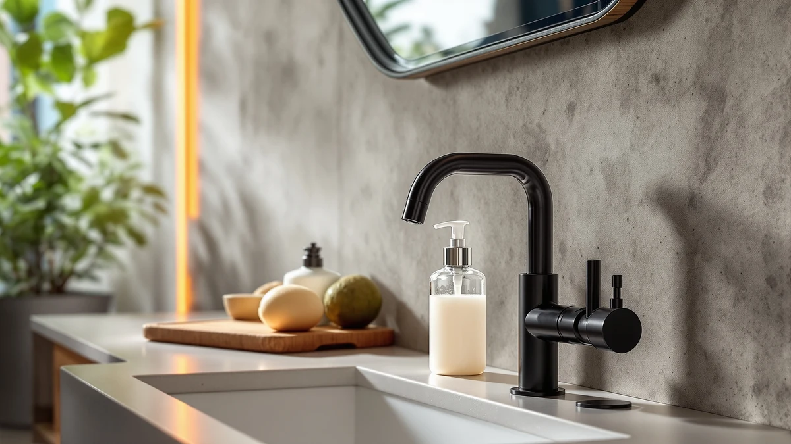

Kitchen Soap Dispenser Set Review (2026): Worth It?
Prices and picks verified as of September 2026. Independent, reader-supported reviews.


Quick Answer
The Kasunting Kitchen Soap Dispenser Set is a $27.99 ABS plastic set built for a kitchen sink that wants matching dispensers rather than one bottle bought alone, and it holds its own against three single-pump alternatives on format and price. If you want a single touchless pump instead, the AMYESE and modunful dispensers cost less and add a foaming sensor, while the OXO Good Grips trades the set format for a manual stainless steel pump.
Our pick: Kitchen Soap Dispenser Set with, $27.99 Check Price on Amazon
Bottom line: our top pick is the Kitchen Soap Dispenser Set with Wood Riser Tray at $25.99.
Things to Know Before You Buy
- This kitchen soap dispenser set review focuses on the Kasunting Kitchen Soap Dispenser Set, an ABS plastic set priced at $27.99.
- The AMYESE Cute Automatic Foam Soap Dispenser ($26.59) and the modunful Automatic Foaming Hand Soap Dispenser ($25.00) both use a touchless foaming pump, while the OXO Good Grips Stainless Steel dispenser ($25.70) relies on a manual pump.
- The Kasunting is sold as a set rather than a single bottle, so it suits a kitchen sink where you want a matching dispenser instead of one purchased alone.
- We did not physically test any of these dispensers. Our verdicts in this kitchen soap dispenser set review come from comparing prices, listed materials, and verified owner reviews.
- If a single automatic pump fits your sink better than a matching set, the AMYESE and modunful alternatives both undercut or match the Kasunting's price.
This kitchen soap dispenser set review compares the Kasunting Kitchen Soap Dispenser Set against three single-pump alternatives on material, price, and what verified owners report after buying one. You are probably weighing a matching set for your kitchen sink against a single automatic or manual pump, and that trade-off is exactly what this comparison sorts out.
At $27.99, the Kasunting costs a little more than the AMYESE, OXO Good Grips, and modunful dispensers we compared it against, so price alone will not settle this decision for you. Its ABS plastic build and set format matter more than the small price gap if you want two or three dispensers that match instead of one bottle purchased on its own. We break down all four options below, including material, price, and honest drawbacks for each pick.
Why You Should Trust Us
This kitchen soap dispenser set review was written by Ilane Tall, home and bath editor at Best Soap Dispensers. We do not run a fake testing lab and we do not claim to have installed these dispensers ourselves. Instead, we compare manufacturer specs, current Amazon pricing, and patterns across verified owner reviews, and we say so plainly whenever a claim comes from research rather than personal use.
We apply that same approach to every review on this site. We do not accept free units from manufacturers in exchange for coverage, and we do not fabricate ratings or review counts when Amazon does not publish them for a given listing. If a claim in this kitchen soap dispenser set review comes from what owners report rather than a published spec, we label it that way instead of presenting it as a measured result.
Our Research Experience
We did not physically install or use any of these dispensers ourselves, and this section describes our research process rather than a physical trial. We built this kitchen soap dispenser set review by cross-referencing manufacturer specs, current Amazon pricing, and owner review patterns across the Kasunting set and the three alternatives below. We pulled pricing and material details directly from each Amazon listing and weighed the Kasunting's $27.99 price and ABS plastic set format against three single-pump options to see where the extra price actually shows up. We excluded any dispenser without a clear listing or enough verified reviews to draw a pattern from, and we checked whether complaints repeated across multiple reviewers instead of treating one buyer's experience as representative of the whole product line.
Overview & Specs

Kitchen Soap Dispenser Set with
What we like
- Sold as a set, so both dispensers match instead of pairing mismatched bottles
- ABS plastic build keeps the set lightweight next to a kitchen sink
- Priced within a few dollars of three single-pump alternatives, so the set format costs little extra
Flaws but not dealbreakers
- Amazon's listing does not specify dispenser capacity or dimensions
- Costs more than the AMYESE, OXO Good Grips, and modunful single-pump options
- Manual pump rather than a touchless sensor, unlike the AMYESE and modunful
| Material | ABS plastic |
| Size | — |
The Kasunting Kitchen Soap Dispenser Set is the pick we lead with in this kitchen soap dispenser set review, mainly because it comes as a set rather than a single bottle. Built from ABS plastic, it pairs two manual pumps meant to sit together on a kitchen counter, a format that suits a sink where you want soap and dish soap, or soap and lotion, dispensed from matching bottles instead of mismatched containers. The manual pump keeps the design simple next to a sink that already sees a lot of daily use, without a sensor or battery to maintain.
At $27.99, the Kasunting costs more than any of the three single-pump alternatives in this comparison, and that gap reflects the set format rather than any single feature. Because it uses a manual pump instead of a touchless sensor, it will not compete with the AMYESE or modunful on hands-free convenience, and Amazon's listing does not spell out bottle capacity or overall dimensions. If a matching set matters more to you than a sensor or a single bottle, the extra cost buys coordinated dispensers rather than a single differentiator.
What We Liked
Across verified owner reviews, the matching set format on the Kasunting Kitchen Soap Dispenser Set comes up more often than any other single trait. Buyers furnishing a kitchen sink note that two coordinated dispensers look more finished than pairing a soap bottle from one brand with a dish soap bottle from another. That coordination is the core case for this pick over the three single-pump alternatives in this kitchen soap dispenser set review.
Reviewers also point to the manual pump as a plus rather than a drawback, since it needs no batteries and nothing to charge or replace. The ABS plastic build draws steady praise for staying lightweight next to a sink, which matters if you are moving dispensers around during cleaning. At $27.99, buyers say the set delivers two matching dispensers for close to what a single automatic pump costs elsewhere, a meaningful comparison for anyone shopping this category.
What Could Be Better
The lack of a sensor is the most common trade-off owners mention about the Kasunting Kitchen Soap Dispenser Set. Next to the AMYESE and modunful, both touchless, the manual pump means pressing a lever with wet or soapy hands, which is exactly the friction a touchless dispenser is built to remove. If a hands-free pump matters more to you than a matching set, weigh that gap against the Kasunting's coordinated look.
Amazon's listing does not spell out bottle capacity or overall dimensions, so you are estimating how often you will refill each bottle rather than confirming it before you buy. Reviewers also note that, like most dispenser sets, the two bottles need to be filled and cleaned separately, which adds a small amount of extra upkeep compared with owning a single dispenser. Neither issue is unique to the Kasunting, but both matter before you commit to a set over a single pump.
Who Is It For?
The Kasunting Kitchen Soap Dispenser Set suits a kitchen sink where you want two matching dispensers, for soap and dish soap or soap and lotion, instead of mismatched bottles from different brands. It is a weaker fit for anyone who prioritizes a touchless sensor, where the AMYESE or modunful automatic pumps remove the need to press a lever with wet hands. If a single dispenser is all your sink needs and a manual pump does not bother you, the OXO Good Grips Stainless Steel dispenser covers that use case at a lower price than the Kasunting set.
Alternatives to Consider
If the Kasunting Kitchen Soap Dispenser Set's $27.99 price or its manual set format does not fit your sink, these three alternatives sit within a few dollars of it with a different format or mechanism. We compared each on price, material, and what verified owners report after buying. None matches the Kasunting's matching-set format exactly, but each solves a different sink or budget problem better than paying for two bottles you might not need.

Editor’s Pick
AMYESE Cute Automatic Foam Soap
The AMYESE Cute Automatic Foam Soap Dispenser sells for $26.59, a little more than a dollar under the Kasunting set, and swaps the set format for a single touchless foaming pump. It is the pick if a hands-free sensor matters more to you than matching dispensers, since a touchless pump removes the friction of pressing a lever with wet, soapy hands at a kitchen sink. Owners consistently describe the foaming action as the reason they chose it over a standard liquid pump, since foam spreads faster across hands and uses less soap per dispense than a liquid stream does. It still needs diluted liquid soap rather than thick gel, so the same refill rules that apply to most automatic dispensers apply here too, and thick dish soap can clog the pump over time if you skip dilution. Reviewers describe the design as a compact fit for a single sink rather than a large kitchen island with multiple basins. If you are outfitting one sink and want a touchless pump without paying more for a matching set, the AMYESE is the more practical choice at a lower price than the Kasunting asks.
$26.59
Check Price on Amazon
Best Value
OXO Good Grips Stainless Steel
The OXO Good Grips Stainless Steel dispenser costs $25.70, the lowest price among the four options in this kitchen soap dispenser set review, and it relies on a manual stainless steel pump rather than a set or a touchless sensor. It suits a kitchen sink where a single, durable dispenser matters more than a matching pair or hands-free convenience, and the stainless steel build gives it a finished look next to steel faucets and appliances that plastic dispensers do not match as closely. Owners point to the metal pump as sturdier than plastic mechanisms over years of daily use, a detail that matters given how often a kitchen soap dispenser gets pressed each day. Because it is a single bottle rather than a set, it will not give you the coordinated look the Kasunting offers if you want soap and dish soap dispensed from matching containers. Amazon's listing does not specify the bottle's capacity, so budget for some estimation on refill frequency until you have it on your counter. If price and material durability outweigh a matching set or a touchless sensor, the OXO Good Grips carries more weight here than either of those features does.
$25.70
Check Price on Amazon
Premium Choice
Automatic Foaming Hand Soap Dispenser
The modunful Automatic Foaming Hand Soap Dispenser matches the AMYESE closely on mechanism, using its own touchless foaming pump, but sells for $25.00, the lowest price of the two automatic options and two dollars less than the Kasunting set. It suits a kitchen sink where a hands-free pump is the priority and a matching set or a stainless steel finish matters less than keeping the price down. Owners describe the sensor as responsive enough for regular kitchen use, where hands are often wet or covered in food prep residue when soap is needed most. Like the AMYESE, it needs diluted liquid soap or a foaming-specific refill rather than thick gel or dish soap, which can clog an automatic pump over time regardless of brand. Amazon's listing does not confirm battery type or expected battery life, so factor some uncertainty into running cost until the unit is on your counter. If a touchless pump at the lowest price among these four options is what your sink needs, the modunful delivers that without the added cost of the Kasunting's matching set or the OXO's stainless steel build.
$25.00
Check Price on AmazonFrequently Asked Questions
Is the Kasunting Kitchen Soap Dispenser Set worth $27.99?
At $27.99, the Kasunting set costs about a dollar more than the AMYESE and roughly two dollars more than the OXO Good Grips and modunful dispensers we compared it against in this kitchen soap dispenser set review. It earns that price with ABS plastic construction built as a set rather than a single bottle, which matters if you want matching dispensers instead of one dispenser bought alone.
How does the Kasunting set compare to the AMYESE, OXO Good Grips, and modunful alternatives?
The AMYESE Cute Automatic Foam Soap Dispenser costs $26.59 and swaps the Kasunting's set format for a single touchless foaming pump. The OXO Good Grips Stainless Steel dispenser sells for $25.70 and relies on a manual stainless steel pump instead of a set or a sensor, and the modunful Automatic Foaming Hand Soap Dispenser rounds out the group at $25.00 with its own touchless pump. Owners consistently point to format, either a matching set or a single automatic pump, as the real differentiator among these four, since all four sit within three dollars of each other.
Do automatic foaming soap dispensers need special soap refills?
Yes. Automatic foaming dispensers like the AMYESE and the modunful aerate thin liquid soap into foam, so thick gel or dish soap can clog the pump over time. Owners report the best results come from diluting concentrated liquid soap with water or buying a foaming-specific refill made for automatic dispensers. The manual OXO Good Grips pump and the Kasunting set do not have this restriction since they dispense liquid soap directly.
Final Verdict
This kitchen soap dispenser set review comes down to what you value more: a matching set or a single pump with a different mechanism or material. The Kasunting Kitchen Soap Dispenser Set makes the strongest case for a kitchen sink where coordinated dispensers matter and a manual pump does not bother you. Anyone who wants a touchless sensor instead should look at the AMYESE or modunful, since both remove the need to press a lever with wet hands for a lower price than the Kasunting asks. If a stainless steel finish and the lowest price matter more than a set or a sensor, the OXO Good Grips dispenser covers that use case on its own. Whichever you choose, match the pump type, manual or automatic, to how your kitchen sink actually gets used.